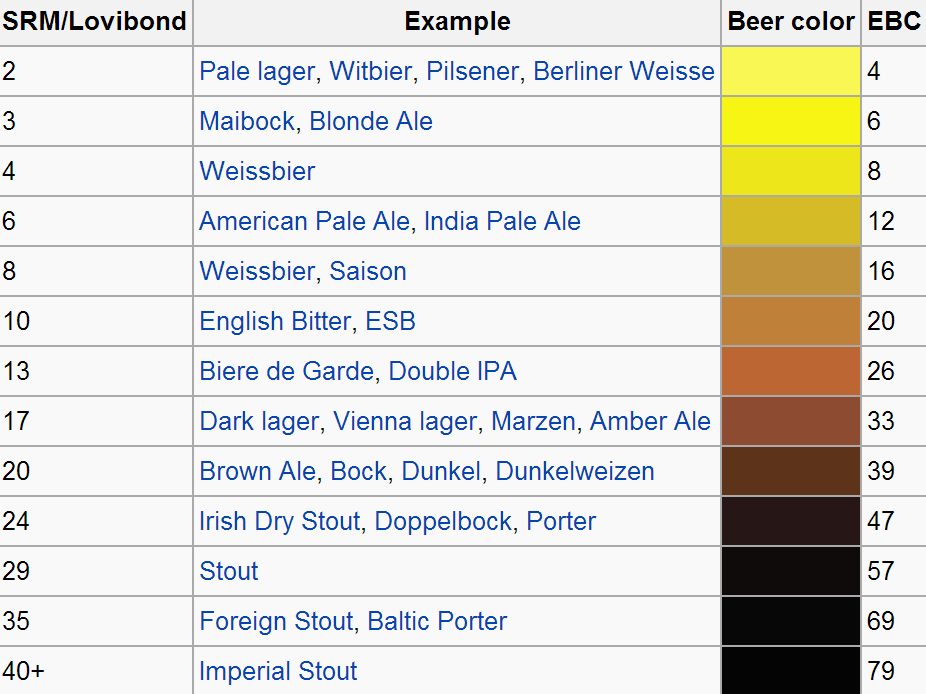
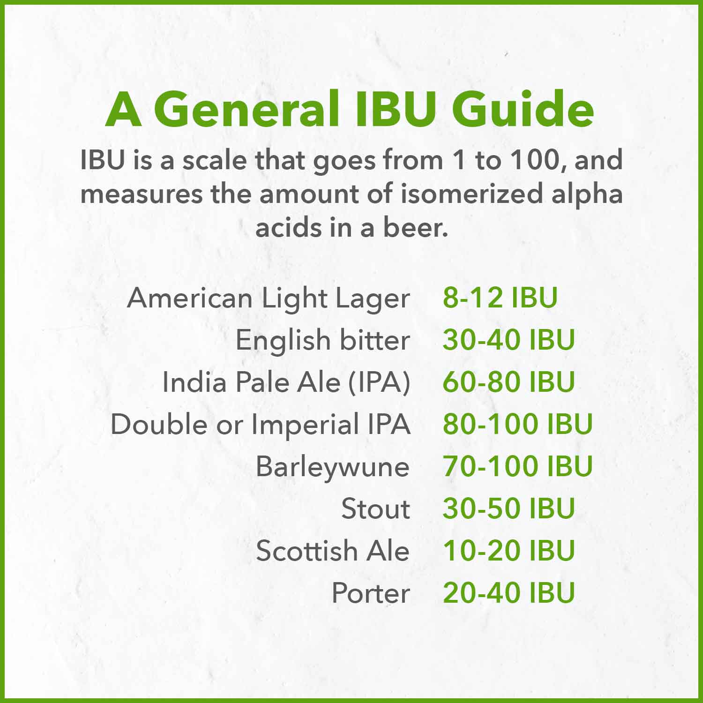

| Term | Meaning / Referring | Note |
|---|---|---|
| Imperial | Any style of beer brewed with an extra dose of grains and hops to produce a higher ABV | Double / Strong |
| Double | Any beer that is higher in alcohol than the standard | Dubbel, 6-8% |
| Tripel | A term used by brewers mainly in the Low Countries, some other European countries, and the U.S. to describe a strong pale ale | 8-10% |
| Session | An adjective used to describe a beer that is lower in alcohol (generally under 4 or 5% ABV) and high in refreshment. | - |
| Mashing (담금) |
The process of combining a mix of grains – typically malted barley with supplementary grains such as corn, sorghum, rye, or wheat – known as the "grain bill" with water and then heating the mixture. | - |
| Malt (맥아) |
Germinated cereal grain that has been dried in a process known as "malting" (The grain is made to germinate by soaking in water and is then halted from germinating further by drying with hot air.) | Types of Malt |
| Wort (맥아즙) |
The liquid extracted from the mashing process during the brewing of beer or whisky. Wort contains the sugars, the most important being maltose and maltotriose,[1] that will be fermented by the brewing yeast to produce alcohol. | - |
| ATP (Authentic Trappist Product) |
|
- |
| ABV (Alcohol by Volume) |
The amount of ethanol (alcohol) in a container is shown as a percentage of the overall volume of the drink | - |
| EBC (European Brewery Convention) |
The color of a beer measured in a technical manner |  |
| IBU (International Bitterness Units) |
A scale to gauge the level of a beer's bitterness |  |
| Bavaria Breweries | Almost half of all German breweries are in Bavaria, where the seven main breweries produce 158 million gallons. | List of Breweries |
| Belgian Breweries | Beer in Belgium varies from pale lager to amber ales, lambic beers, Flemish red ales, sour brown ales, strong ales and stouts. In 2018, there were approximately 304 active breweries in Belgium, including international companies, such as AB InBev, and traditional breweries including Trappist monasteries. | List of Breweries |
| Trappist Beer | Trappist beer is brewed by Trappist monks. Fourteen monasteries—six in Belgium, two in the Netherlands, and one each in Austria, Italy, England, France, Spain and the United States—currently produce Trappist beer as members of the International Trappist Association (ITA). | List of Breweries |
| Cask Beer (Real Ale) |
Beer brewed from traditional ingredients, matured by secondary fermentation in the container from which it is dispensed, and served without the use of extraneous carbon dioxide | - |
| Draught Beer (Draft Beer) |
Beer served from a cask or keg rather than from a bottle or can. | - |
| Filtered Beer | Any ale, lager, or fermented malt beverage in which the sediment left over from the brewing process has been removed | - |
| Keg Beer | Draught beer served from a pressurised keg is also known as keg beer. Keg beer is often filtered and/or pasteurised, both of which are processes that render the yeast inactive. | - |